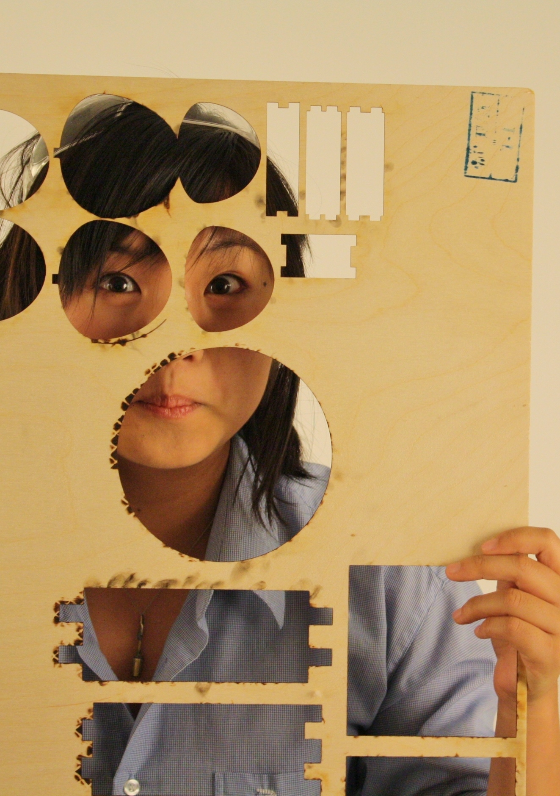

hello, I'm Liani!
During the day, I'm a sophomore designing a "smarter" prosthetic arm for under-the-elbow amputees and building an autonomous trans-Atlantic sailboat for fun. But underneath all the tech jargon, I'm an LA transplant learning to navigate the intricacies of being a femlae, minority, solidly-blue-collar-background engineer in clean-cut New England.